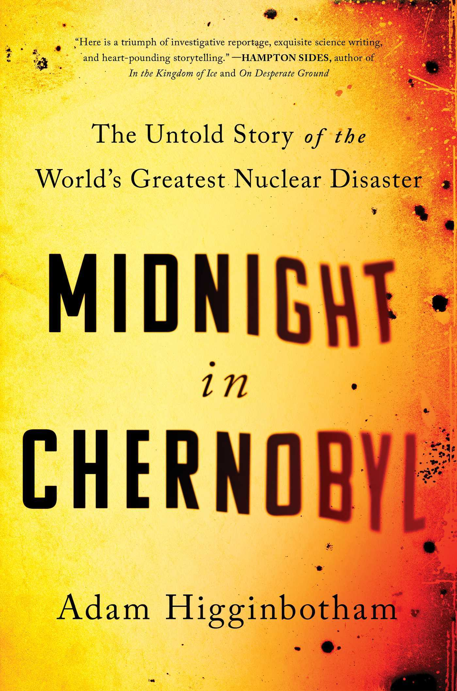

"Midnight in Chernobyl: The Untold Story of the World's Greatest Nuclear Disaster"
- Read on 2022-08-27
- Rating: ️️️️️
- Format: 🎧 (13 hours 55 minutes)
Whoa. This was really really interesting, and I recommended it immediately to others. I enjoyed the variety of details, and the enlightening information about nuclear reactors in general. Furthermore, this wasn't my first book about things related to Russia. The continuous secrecy, while very characteristic, is understandable in some cases and frustrating in so many others.